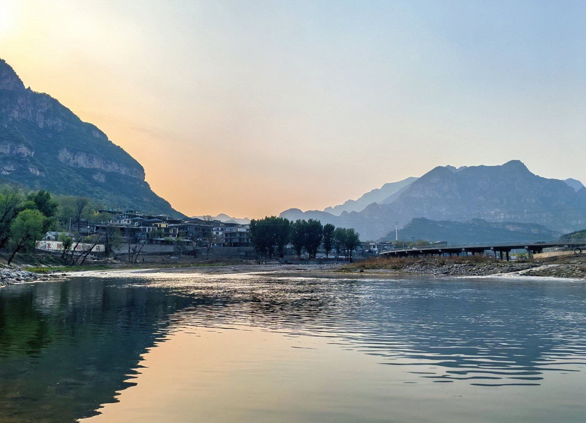
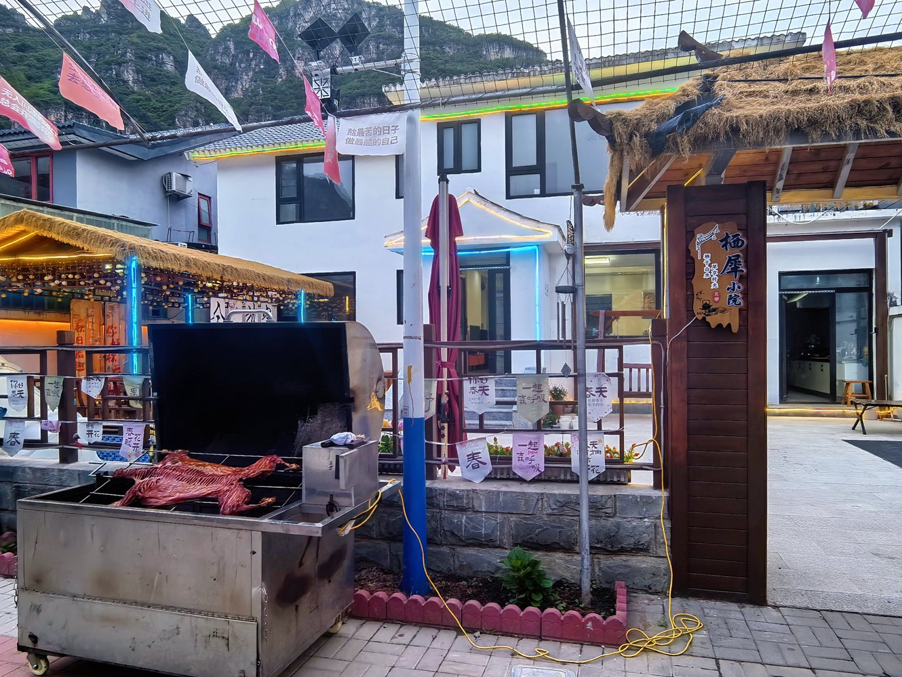

暑假十渡游玩攻略
暑假去十渡，两天一晚怎么玩更舒服
暑假来十渡，不建议把项目排得太满。比较舒服的方式是：白天选一到两个重点项目，傍晚去拒马河边走走，晚上回栖犀小院烧烤、玩水、聊天。这样既有山水项目，也有真正放松下来的时间。

暑假十渡怎么玩：先选住宿，再选项目
十渡的项目分散在不同“渡”和不同景区里。暑假天气热，带孩子、带老人或朋友多人出行时，住宿位置会直接影响体验。住得太偏，白天玩项目、晚上吃饭和临时补给都会多花时间。
栖犀小院位于十渡镇九渡村别墅区，属于十渡核心区域。周边靠近拒马河、拒马乐园、聚龙湾、誓言山等项目，也方便继续开车去乐谷银滩、东湖港。暑假两天一晚，把这里作为据点会比较省心。
第一天：下午到达，先轻松玩


第二天：选一个重点项目，不用全部打卡
十渡项目很多，但暑假最怕“什么都想玩，最后全在排队和赶路”。第二天建议只选一个重点景区或一个重点玩法。


暑假住栖犀小院适合哪些人
如果是两三家人一起出来，或者朋友想包院聚会，栖犀小院会比只订几个分散房间更方便。7间客房均带独立卫浴，可住约17-20人；院内有烧烤、儿童戏水泳池、KTV、麻将棋牌、免费停车和充电车位。
暑假十渡白天可以出去玩水、漂流、蹦极和看山，晚上回小院休息。对亲子、朋友聚会和北京周边两天一晚来说，这种“白天玩景区，晚上玩院子”的节奏更舒服。
常见问题
暑假去十渡热吗？
白天户外会比较晒，建议把登山、玻璃栈道等项目安排在上午或傍晚，漂流和玩水项目适合夏天，但要带换洗衣物和防晒用品。
暑假十渡两天一晚住哪里方便？
建议住十渡核心区、拒马河附近或九渡村一带。栖犀小院位于九渡村别墅区，靠近拒马河、拒马乐园、聚龙湾等项目。
十渡暑假适合朋友包院吗？
适合。朋友包院可以白天玩飞车小镇、蹦极、漂流或真人CS，晚上回小院烧烤、KTV、麻将和聊天。